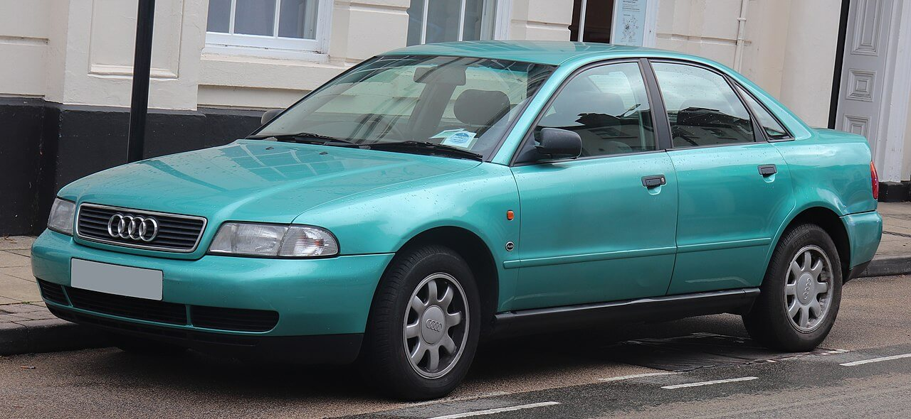
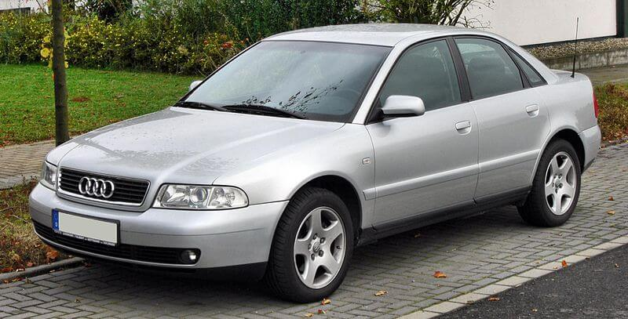
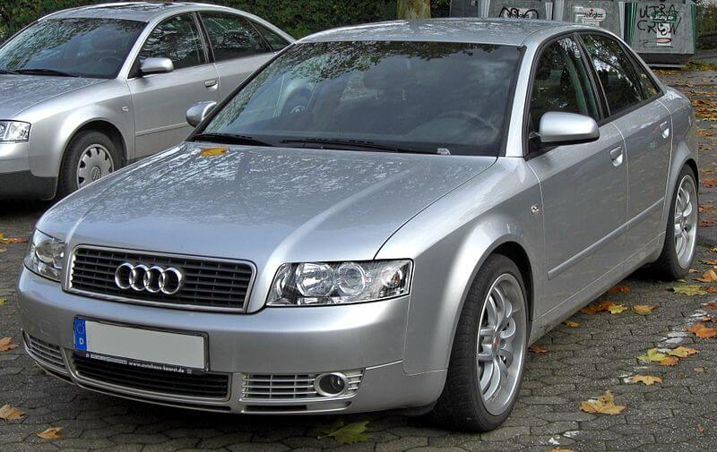
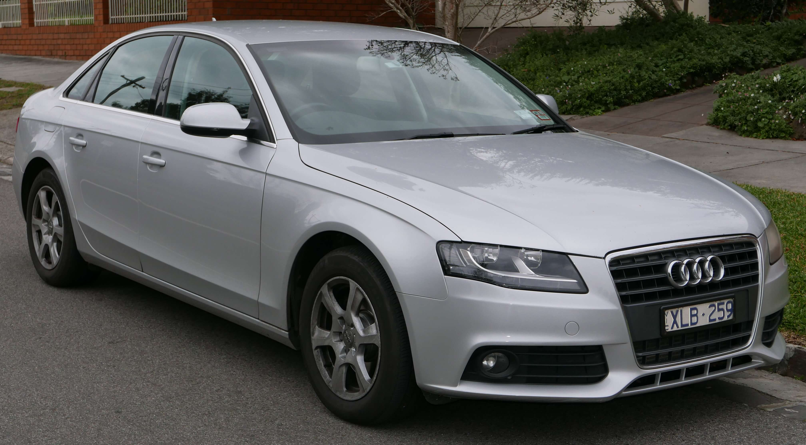
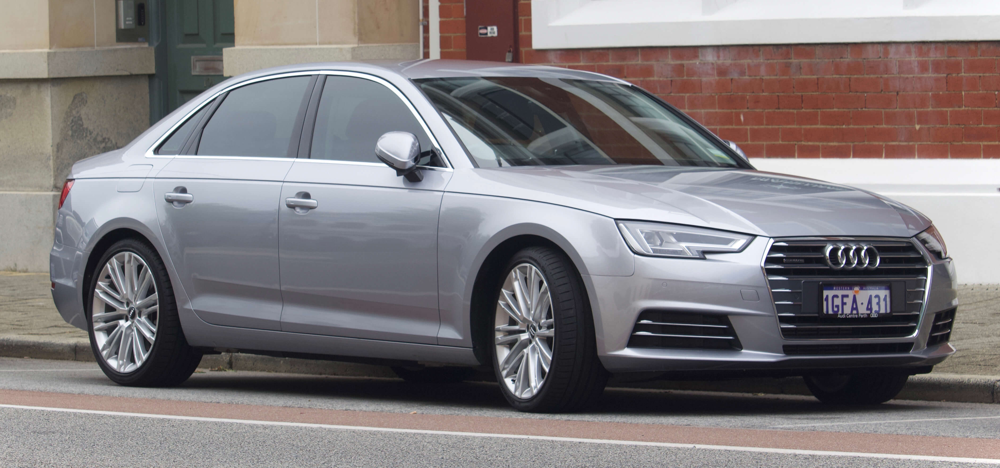

The Audi A4 is a line of compact executive cars produced since 1994 by the German car manufacturer Audi, a subsidiary of the Volkswagen Group. A4 has been built in five generations and is based on the Volkswagen Group B platform. The first generation A4 succeeded the Audi 80. The automaker's internal numbering treats the A4 as a continuation of the Audi 80 lineage, with the initial A4 designated as the B5-series, followed by the B6, B7, B8 and the B9. The B8 and B9 versions of the A4 are built on the Volkswagen Group MLB platform shared with many other Audi models and potentially one Porsche model within Volkswagen Group. The Audi A4 automobile layout consists of a front-engine design, with transaxle-type transmissions mounted at the rear of the engine. The cars are front-wheel drive, or on some models, "quattro" all-wheel drive. The A4 is available as a sedan and station wagon. The second (B6) and third generations (B7) of the A4 also had a convertible version, but the B8 version of the convertible became a variant of the Audi A5 instead as Audi got back into the compact executive coupé segment. On May 15, 2019, Audi announced that Audi A4 is receiving some handsome changes with the style and technology offerings.
The first generation Audi A4 (known internally as the Typ 8D) debuted in October 1994, with production starting November 1994 and European sales commencing in January 1995 for the 1995 model year. North American sales later began in September 1995 for the 1996 model year.[8] It was built on the Volkswagen Group B5 (PL45) platform, which it shared with the fourth generation Volkswagen Passat (B5, Typ 3B). It had a front-mounted longitudinal engine and front-wheel drive. Many variations of the A4 were also available with Audi's quattro four-wheel drive system. The A4 was initially introduced as a four-door saloon/sedan; the Avant (estate/wagon) was introduced in November 1995 and went on sale in February 1996. Development began in 1988, with the first design sketches being created later that year. By 1991, an exterior design by Imre Hasanic was chosen and frozen for November 1994 production by 1992. The interior design was later finalized in 1992, with pilot production commencing in the first half of 1994. Development concluded in the third quarter of 1994, preceding November 1994 start of production. A wide range of engines were available in European markets, between 1.6 and 2.8 litres for petrol engines; and a 1.9-litre diesel engine available with Volkswagen Group's VE technology, capable of achieving a 90 PS (66 kW; 89 bhp) or 110 PS (81 kW; 108 bhp). The 2.6 and 2.8-litre V6 engines which had been carried over from the old 80/90 proved popular, although in North America, the 2.8-litre engine was the only V6 that was available there until 1997. The Audi A4 was the first model in the Volkswagen Group to feature the new 1.8-litre 20v engine with five valves per cylinder, based on the unit Audi Sport had developed for their Supertouring race car. A turbocharged 1.8T version produced 150 PS (110 kW; 148 bhp) and 210 N⋅m (155 lb⋅ft) torque. Moreover, a quattro GmbH special edition of the B5 1.8T was later available in Germany and Europe, for which the engine's power output was raised to 178 PS (131 kW; 176 bhp) and 235 N⋅m (173 lb⋅ft). Five-valve technology was also added to a reengineered V6 family of engines in 1997, starting with the 2.8-litre V6 30v, which now produced 193 PS (142 kW; 190 bhp), followed by a 2.4-litre V6 which was a downsize from the previous 2.6 litre, 150 hp engine, but with a power increase to 165 PS (121 kW; 163 bhp). Audi also debuted their new tiptronic automatic transmission on the B5 platform, based on the unit Porsche developed for their 964-generation 911. The transmission is a conventional automatic gearbox with a torque converter offering the driver fully automatic operation or manual selection of the gear ratios. The B5 marked Audi's continued move into the midsize luxury car segment, having started this trajectory notably with later model years of the preceding Audi 80/90 B4. Despite initial mechanical problems, overall build and assembly quality were lauded both by the automotive press and within Audi and Volkswagen, and at the time, parent company Volkswagen declared the B5 the company-wide build quality benchmark for all its other models. 
Photo: Audi A4 (B5).
The Audi A4 B5 saw nearly constant minor changes and alterations throughout its seven-year run. Moreover, a significant facelift was introduced for the 1998 B5 model year at the 1997 Frankfurt Motor Show, with sales beginning in Europe in early 1998. The 2.8-litre 30-valve V6 engine replaced the 2.8-litre 12-valve. A 2.5-litre V6 Turbocharged Direct Injection (TDI) diesel engine with 150 PS (110 kW; 148 bhp) was standard on the quattro. A six-speed manual gearbox was available, as well as the new high-performance Audi S4, now part of the A4 lineup (the previous S4 had been an Audi 100). Cosmetic updates included new rear lights, headlights, door handles, and other minor exterior/interior changes. In mid-1998, the 1.8 20vT engine available outside Europe had its power output raised to 170 PS (125 kW; 168 bhp). The previous KKK K03 turbocharger, although fundamentally unchanged, received revisions on the turbine side to prevent cracking due to heat.[citation needed] The 12-valve V6 was replaced by the 30-valve unit which had been available in Europe for two years. A further facelift took place across the A4 and S4 platform in February 1999 as a 1999.5 model; changes were largely cosmetic, but affected many components, such as both front and rear bumpers, the front and rear lights, the center console, and door handles.[13] This facelift was known at Audi as a Grosse Produktaufwertung (Major Product Upgrade), as was also signified by facelift cars now carrying the denomination "8D2". In 1999 Audi also debuted an even higher performance RennSport model (rennsport literally translates as racing sport), the RS4 Avant, like its predecessor RS2, available only in the Avant bodystyle.
Photo: Audi A4 (B5) Facelift.
The next A4, internally designated Typ 8E, debuted on 10 October 2000, now riding on the Volkswagen Group B6 (PL46) platform. The car's new styling was developed under Peter Schreyer between 1996–1998, inspired by the Bauhaus design language of the C5 (second-generation) Audi A6 introduced in 1997. The 1.6-litre base model powerplant remained unchanged, but most other petrol/gasoline engines received either displacement increases, or power upgrades. The 1.8-litre 20-valve Turbo was now available in two additional versions, with 150 PS (110 kW; 148 bhp) or 180 PS (132 kW; 178 bhp), this one with a standard six-speed manual gearbox, while the naturally aspirated 1.6-litre inline-four engine and 2.8-litre V6 were replaced by 2.0-litre, and all-aluminium alloy 3.0-litre units, still with five valves per cylinder, the most powerful of which was capable of 220 PS (162 kW; 217 bhp) and 300 N⋅m (221 lb⋅ft) of torque. The 1.9 Turbocharged Direct Injection (TDI) engine was upgraded to 130 PS (96 kW; 128 bhp), with Pumpe Düse (Unit Injector) (PD) technology, and was now available with quattro permanent four-wheel drive, while the 2.5 V6 TDI high-end model was introduced with 180 PS (132 kW; 178 bhp) and standard quattro. This generation of quattro consisted of default of 50:50 front to rear dynamic torque distribution. A Bosch ESP 5.7 Electronic Stability Programme (ESP) system, with anti-lock braking system (ABS), brake assist, and electronic brakeforce distribution (EBD) were standard across the range. The Avant was introduced in June 2001 and arrived in European showrooms in September 2001. For 2002, Audi increased power in the 1.8 Turbo engines to 183 PS (135 kW; 180 bhp) and 190 PS (140 kW; 187 bhp) – the 190 PS variant designated by a red 'T' on the boot lid. Available with four wheel drive and in the 2.5 TDI intermediate version to 163 PS (120 kW; 161 bhp). A 2.0 engine with Fuel Stratified Injection (FSI) was also available. A year later, Audi reintroduced the S4, now powered by a 344 PS (253 kW; 339 bhp) 4.2 L V8 engine, as well as an A4 Cabriolet convertible variant (Typ 8H), finally replacing the 80-based Audi Cabriolet which had been discontinued in 2000. It included an electro-hydraulic operated roof, which lowered in under 30 seconds and incorporated some styling changes, such as body-coloured lower bumper and sill panels, which later found their way to the saloon version. Audi introduced a continuously variable transmission developed by LuK, named multitronic, which replaced the dated conventional automatic transmission on front-wheel drive models. The transmission won considerable praise from the automotive press, and is generally regarded[by whom?] as being the best of its type in the world, due to its light weight and promptness in response.[citation needed] This high strength chain driven CVT was made from highly durable metals and used a very high grade, purpose-designed fully synthetic lubricant. However, there have been widespread complaints from consumers around the world that the transmission box is prone to electronic glitches as well as mechanical problems. Borrowing from the Audi A6, the boot was redesigned to remove the extension of the top edge with a smoother fold line. The rear light assemblies now formed part of the top line, these styling cues were eventually borrowed by other European as well as Asian manufacturers. A sport package named 'Ultra Sport' was introduced in the North American market shortly before the B6 was replaced by the B7. It included aluminium interior trim and door sills, "S line" steering wheel, front and rear spoilers, side skirts, and quattro GmbH designed 18-inch RS4 alloy wheels.
Photo: Audi A4 (B6).
Audi introduced a revised A4 in late 2004, with the internal designation of B7. Although given a new platform designation, the B7 was essentially a heavily facelifted and revised version of the B6, with revised steering settings, suspension geometry,[specify] new internal combustion engine ranges, navigation systems and chassis electronics (including a new advanced Bosch ESP 8.0 Electronic Stability Programme (ESP) system). The front grille assembly changed to a tall trapezoidal shape in the same manner as the C6 (third-generation) Audi A6; however, the dashboard and interior were virtually unchanged from the B6 aside from minor detailing. A variant, developed by quattro GmbH, was first introduced in May 2005, named "Audi A4 DTM Edition". It was inspired from Audi's race cars of the 2004 Deutsche Tourenwagen Masters, and was reintroduced in 2006 as a regular option. The 2.0T FSI engine received revised software mapping to the ECU, which increased the output to 220 PS (162 kW; 217 bhp) and 300 N⋅m (221 lb⋅ft) of torque. It was available with front-wheel drive, or quattro four-wheel drive. The B7 Cabriolet model arrived later than the other two body variants, with sales beginning in February 2006. New on the Cabriolet was an entry-level 2.0 TDI version, but to date, this is not being offered with the multitronic CVT gearbox. In 2007 Audi introduced a version of the B7 named the 'Special Edition', which built on the S-Line specification and also included the black optics pack, the RS4 style 8J X 18 '7-arm double spoke' design alloy wheels, Two-tone Graphite/Black Volterra leather, 3-spoke sports leather/Alcantara multi-function steering wheel with gear knob and hand brake handle in Alcantara with silver stitching, ventilated cross-drilled front disc-brakes, black tailpipes and black roof rails (Avant model only). It also had a power increase of 20 PS, giving an output of 220 PS on the 2.0T model. According to 2007 Swedish vehicle inspection data, the Audi A4 Avant with diesel engine is the most reliable vehicle available on the market, with vehicle inspection rejection rate of 0.0% in three-year-old category.Audi's internal platform nomenclature uses PL46 (passenger car longitudinal platform, size 4, generation 6) for both B6 and B7 chassis. The Typ 8E and Typ 8H internal designations are also carried over from the B6 A4 range, but now have an additional identifying suffix – 8EC for the saloon, 8ED for the Avant, and 8HE for the Cabriolet. The engine lineup received many additions. The 2005 introduction of Fuel Stratified Injection (FSI) on the 2.0 TFSI and 3.2 V6 FSI petrol/gasoline engines, as well as other refinements, increased power output to 200 PS (147 kW; 197 bhp) and 255 PS (188 kW; 252 bhp), respectively. These engines both use a four-valve per cylinder configuration. The prior 5-valve design was incompatible with the FSI direct injection system (due to the siting of the fuel injector, now discharging directly into the combustion chamber). The 2.0 Turbocharged Direct Injection (TDI) diesel engine now combined Pumpe Düse (Unit Injector) (PD) technology with 16 valves, while the larger 2.5 TDI V6 diesel was superseded by a 3.0 V6 TDI, offering a 204 PS (150 kW; 201 bhp) model during the year 2005 which was upgraded to a 233 PS (171 kW; 230 bhp) model in 2006. A 2.7 V6 TDI was added later. Torsen T-2 based quattro permanent four-wheel drive remained as an option on most A4 models. Audi retired its 5-speed manual transmissions in favour of a new Getrag 6-speed. As before, multitronic continuously variable transmission (CVT), now with selectable 'seven-speeds', was an option on front-wheel drive models, whilst a conventional ZF 6HP 6-speed tiptronic automatic transmission was an option on the quattro four-wheel drive models. In addition to the Audi S4, which carried over the powertrain from the B6 S4 – Audi reintroduced the quattro GmbH developed Audi RS4 (RS for RennSport) to the lineup, for the first time on the saloon/sedan and Cabriolet body, and with a naturally aspirated, but high-revving 4.2-litre V8 FSI engine. Another notable[according to whom?] inclusion on the RS4 is the latest generation Torsen T-3 quattro 4wd system, which uses a 'default' asymmetric 40:60 front-rear dynamic torque distribution bias. This new asymmetric centre differential was initially only available on the RS4, but was added a year later on the S4. The remainder of the B7 A4 range still used the T-2 50:50 default dynamic split centre diff.
>
Photo: Audi A4 (B7).
Audi released the first official pictures of the B8 series A4 in August 2007, and unveiled the car to the public at the September 2007 Frankfurt Motor Show. Saloon/sedan and Avant (estate/wagon) models are offered. The Avant was unveiled to the public at the March 2008 Geneva Motor Show. For North America destined models, the B8 continued in production for the 2016 model year, while Europe began deliveries on the 2016 B9 model. The B8 A4 is built on a variant of the Audi Modular Longitudinal Platform, a platform which is also used in the Audi A5 coupé. While prior A4 chassis were limited in wheelbase due to the relationship between the engine, transmission and front axle, the MLP allows for a reduced front overhang, resulting in a greater wheelbase length without the same increase in overall length.[30] This effectively redistributes the centre of gravity slightly rearwards, improving handling by better balancing vehicle mass between the front and rear axles. The estimated static front:rear weight ratio of the B8 A4 is approximately 55:45, depending on body style and engine. The relocation of the steering rack in front of the axle also improves handling over previous A4 platforms.[citation needed] Key to the implementation of MLB is the novel mounting of the differential in front of the clutch. This is achieved by driving the flywheel/clutch remotely by means of a 'top hat' shaped drive plate, between which the differential lay shaft passes, whilst power transmission to the final drive is via an inclined transfer shaft which runs the length of the transmission unit. Whilst the platform retains Audi's "overhung" engine mounting position, the front axle is now 152mm further forward than the previous B6/B7 generation platform.[31] The transfer shaft, however, has the effect of creating a large "bulge" on one side of the transmission tunnel, which on right-hand drive versions forces the pedals to be badly offset, which has attracted criticism from the British motoring press in particular. The B8 A4 has increased in wheelbase by 160 millimetres (6.3 in) and in length by 117 millimetres (4.6 in) over the prior B7, which has allowed for increased rear seating legroom. Although the overall dimensions have increased, the kerb weight has dropped some 10%. The boot (trunk) has also increased to 480 litres (17.0 cu ft) for the saloon (sedan) version. The A4 Avant will have a maximum capacity of 1,430 L (50.5 cu ft) with the rear seats folded down. Reception has been mixed, with praise for the Audi A4's increased size, giving it best-in-class rear legroom and trunk space in the compact executive car segment.[32] Its inline-4 2.0 TFSI engine, while efficient providing plenty of torque, was considered lacking and less refined compared to 6-cylinder engines of lighter rivals who posted faster acceleration times. However, the Audi S4 sports sedan has been well-received for its V6 3.0 TFSI engine's power and efficiency. The B8 A4 was facelifted in early 2012. During a model cycle changes are made to integrate new technologies and to keep the model competitive. These changes are referenced based on the model year (MY) of the car. In Australia, the B8 has undergone 2 revisions leading to three variants, the B8, B8 MY10[36] and B8 MY11
Photo: Audi A4 (B8).
The next-generation B9 version of the A4 was revealed in June 2015 – the fifth model to carry the A4 badge, and the ninth generation of the Audi 80/A4 series overall. Pre-production versions were released to the motoring press, whilst the official launch occurred at the Frankfurt Motor Show in September 2015. The B9 is slightly larger than the outgoing B8, but Audi claims the new A4 is around 120 kg (265 lb) lighter than its predecessor.
Photo: Audi A4 (B9).
Audi released the first official pictures of the B8 series A4 in August 2007, and unveiled the car to the public at the September 2007 Frankfurt Motor Show. Saloon/sedan and Avant (estate/wagon) models are offered.
The Avant station wagon/estate was presented at the March 2008 Geneva Motor Show.
The A4L is a long-wheelbase version for the Chinese market, with a 60 mm (2.4 in) longer wheelbase and length.The vehicle was presented at the 2008 Guangzhou Motor Show. The production version then went on sale in January 2009. Launch models included a 2.0 TFSI with 132 kW (180 hp) and the 3.2 FSI with 195 kW (265 hp).
The A4 allroad quattro features a wider track, increased ground clearance, quattro permanent four-wheel drive, a distinctive radiator grille, stainless steel underbody guards and roof rails. The A4 allroad quattro was made available in early summer 2009.The car was unveiled in 2009 Geneva Motor Show.